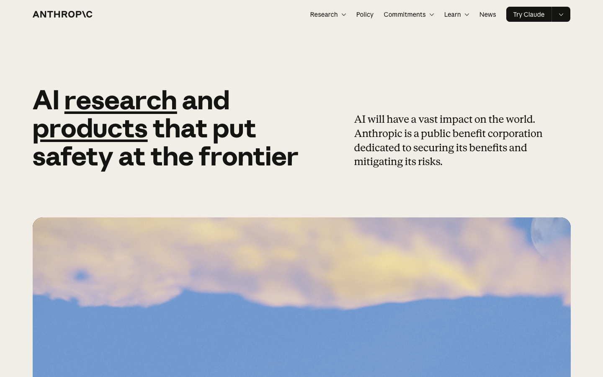
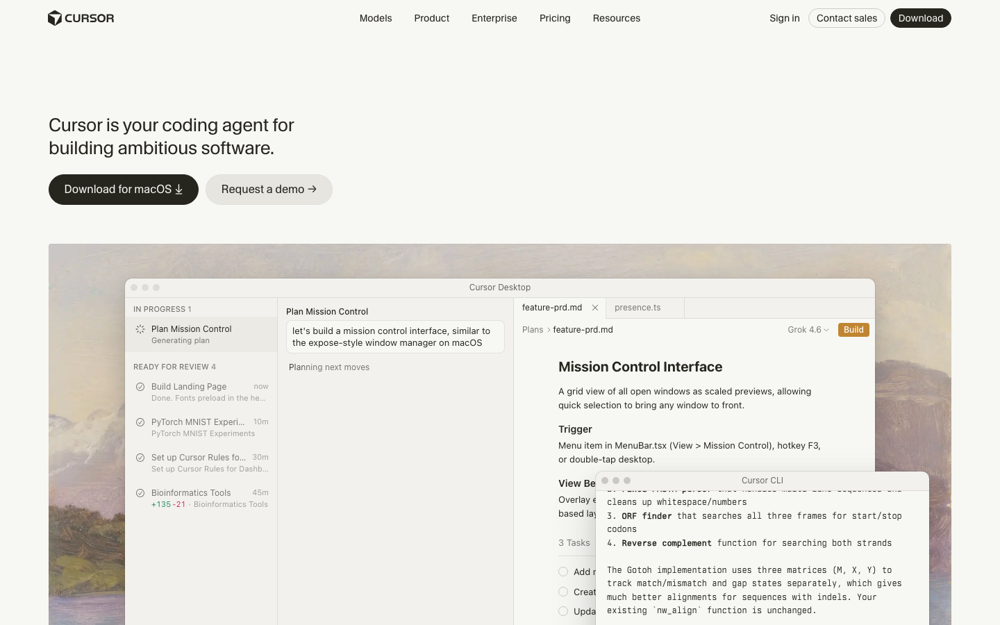
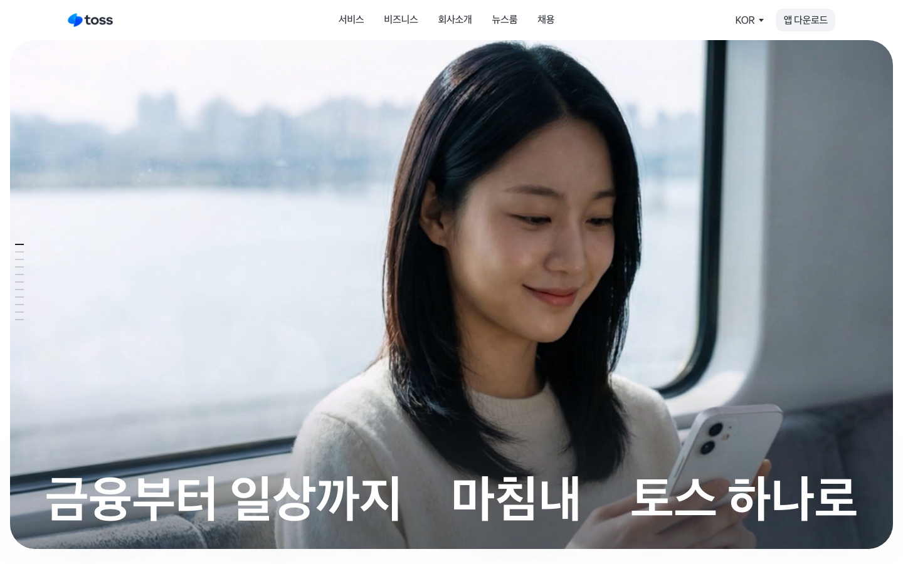

Anthropic차분한 브랜드·설명 중심원본 사이트 ↗참고할 점넉넉한 여백, 굵은 제목과 짧은 설명의 대비추천 상황: 브랜드 소개, 컨설팅, 글 중심 서비스큰 제목과 여유 있는 문장 배치를 참고하고 내 브랜드 색과 사진을 사용해줘.2026-09-06 캡처 · 제3자 콘텐츠 권리는 원 권리자에게 있습니다.
Cursor간결한 제품 소개원본 사이트 ↗참고할 점짧은 가치 설명과 바로 이어지는 제품 화면추천 상황: 앱·SaaS·AI 도구 소개짧은 소개 다음에 내 제품 화면을 크게 보여줘. 다운로드 버튼을 무작정 복제하지 말고 내 서비스의 행동으로 바꿔줘.2026-09-06 캡처 · 제3자 콘텐츠 권리는 원 권리자에게 있습니다.
Toss한글·생활 이미지 중심원본 사이트 ↗참고할 점짧고 큰 한글 문구와 넓은 생활 이미지추천 상황: 한국어 서비스·일상 브랜드큰 한글 제목과 생활 이미지의 대비를 참고해줘. 좁은 화면의 줄바꿈은 우리 문구로 직접 확인해줘.2026-09-06 캡처 · 제3자 콘텐츠 권리는 원 권리자에게 있습니다.